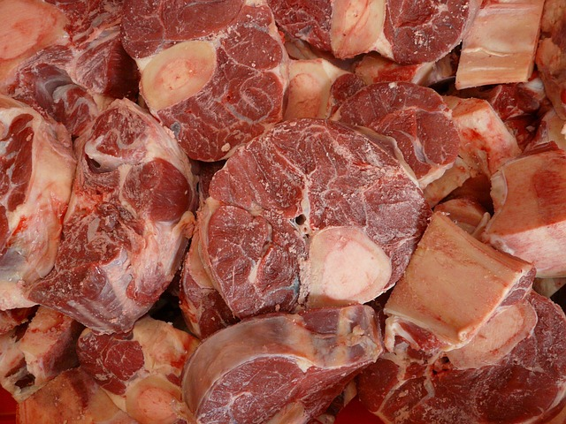
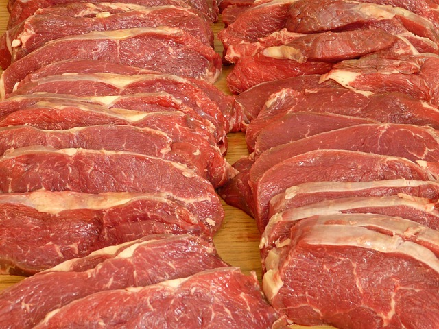
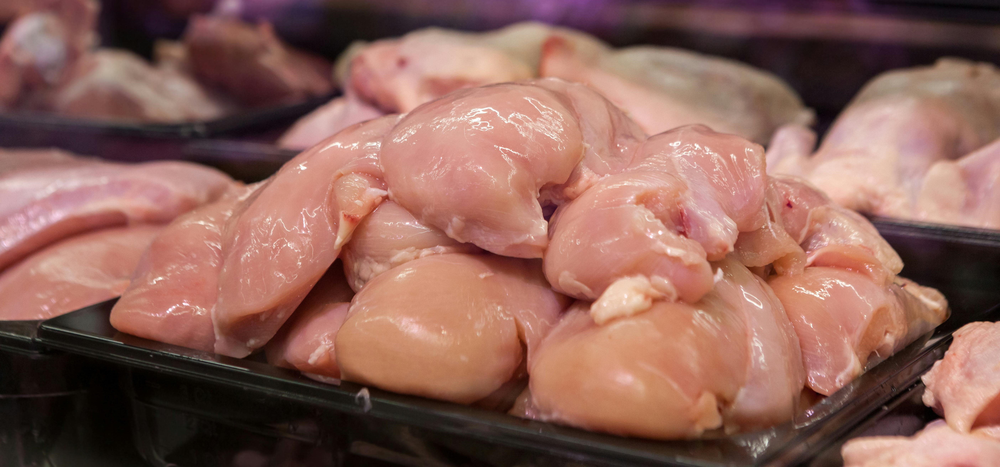
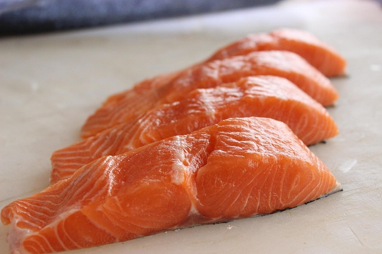

Catálogo Completo
Selecciona una categoría para ver nuestros cortes especializados.

Ribeye Premium
El rey de los cortes. Nuestro Ribeye se caracteriza por su marmoleo abundante que garantiza una suavidad y sabor excepcionales. Ideal para asar a la parrilla.
Origen: Nacional / Importado
Cotizar por WhatsApp



Costilla Cargada
Jugosa y llena de carne. Perfecta para ahumar o preparar en salsa BBQ. Seleccionamos cerdos jóvenes para asegurar la mejor textura.
Origen: Nacional
Cotizar
Chicharrón
Prensado
Ver Detalle
Pierna
Sin Hueso
Ver Detalle
Shoulder
Hombro de Cerdo
Ver Detalle
Manitas
De Cerdo
Ver Detalle
Tocino
Recorte
Ver Detalle
Pechuga de Pollo
Pechuga fresca, limpia y sin hueso. Ideal para empanizar, asar o deshebrar. Calidad premium.
Origen: Nacional
Cotizar por WhatsApp
Salmón Fresco
Rico en Omega-3 y con un color vibrante. Traído directamente de las mejores zonas pesqueras para tu restaurante.
Origen: Importado
Cotizar
Tilapia
Filete
Ver Detalle
Camarón